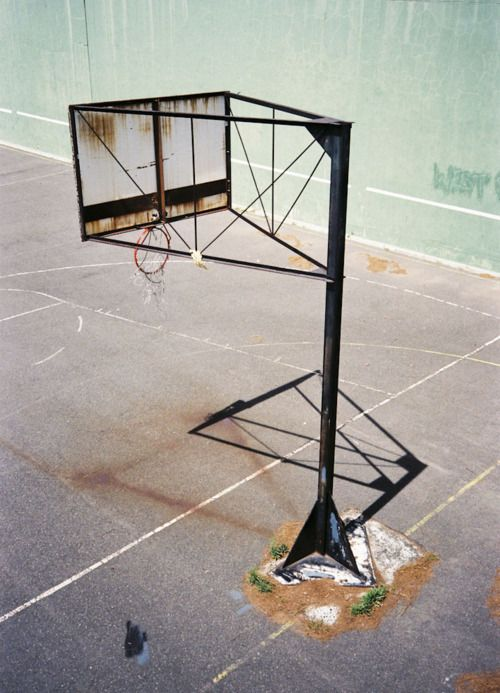
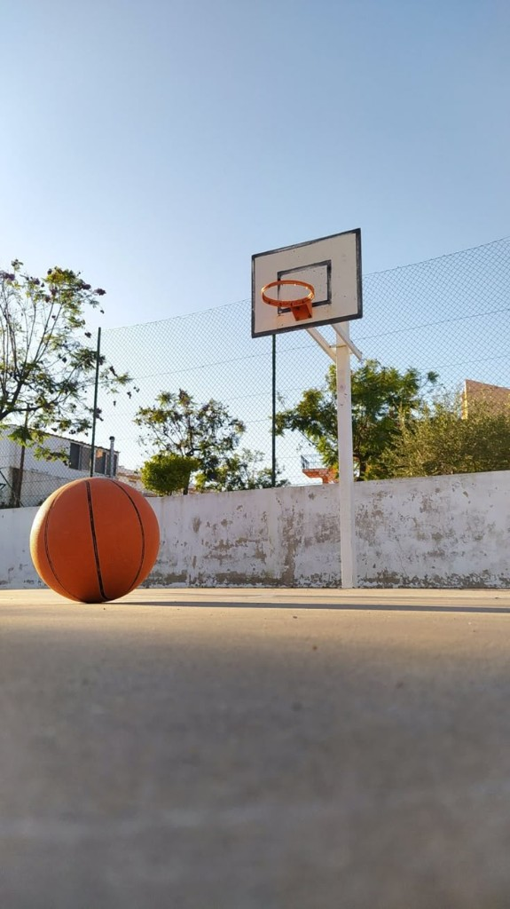
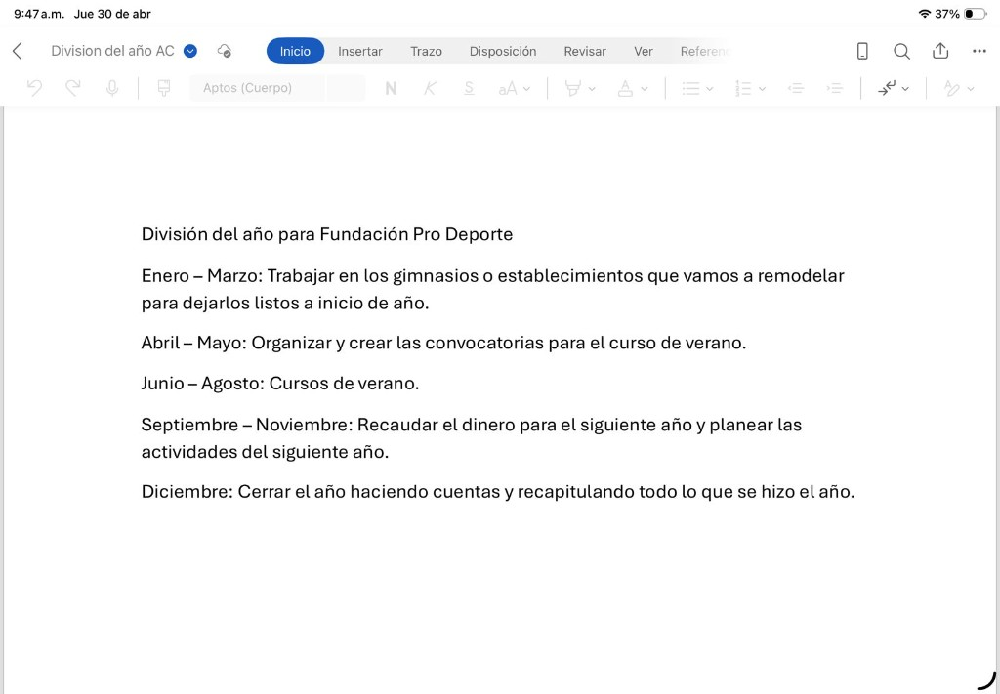

Nuestro trabajo
En Fundación Pro Deporte rehabilitamos canchas y centros deportivos para que la comunidad tenga espacios seguros, funcionales y dignos.
Además, cada año organizamos cursos de verano donde promovemos disciplina, convivencia, salud y formación deportiva para niñas, niños y jóvenes.
Antes y después


Cronograma anual

- Enero a marzo: trabajo de remodelación en gimnasios y establecimientos.
- Abril a mayo: organización y convocatoria para cursos de verano.
- Junio a agosto: desarrollo de cursos de verano.
- Septiembre a noviembre: recaudación para el siguiente año y planeación de actividades.
- Diciembre: cierre anual, cuentas y recapitulación de logros.